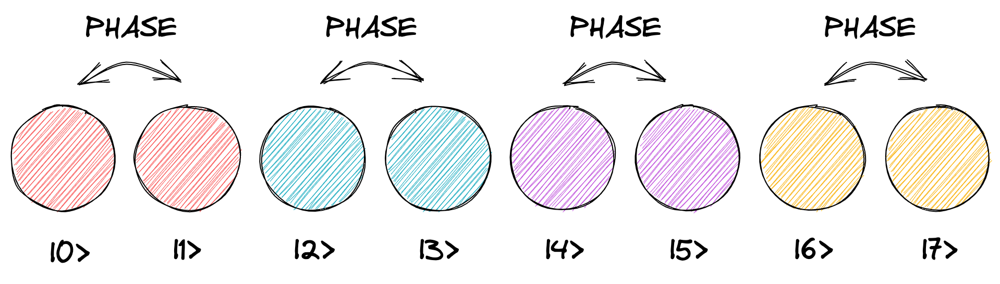
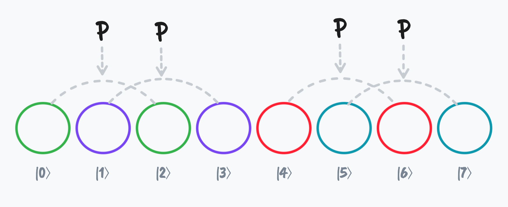
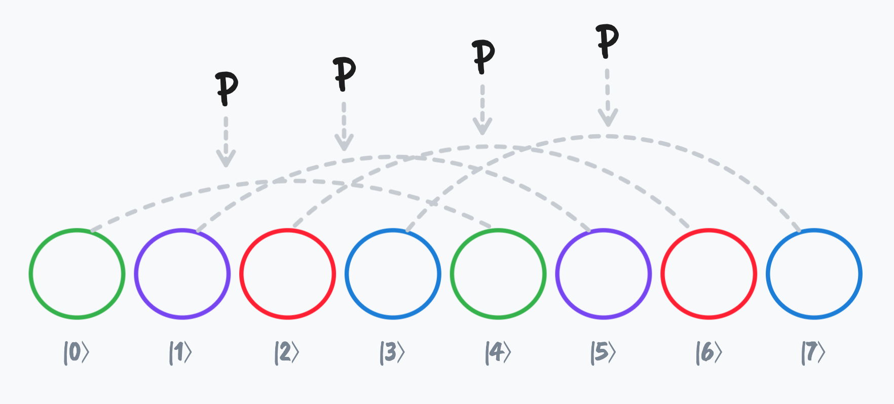

{% include minus.svg class="h-6 w-6 fill-current text-gray-400" %}
{% include arrow_right.svg class="h-6 w-6 fill-current text-gray-400" %}
PHASE ゲートを 1 ビット目に置いた場合
PHASE ゲートを 1 ビット目に置くと、PHASE ゲートは「{% ket 0 %} と {% ket 1 %}」、「{% ket 2 %} と
{% ket 3 %}」、「{% ket 4 %} と {% ket 5 %}」、「{% ket 6 %} と {% ket 7 %}」
それぞれのペアに対して作用します。

PHASE ゲートはペアの右側の位相にしか作用しないので、全体では円の半分のみに作用します。
{% include divider_vertical.svg class="h-6 w-6 fill-current text-gray-400" %}
PHASE(π/4) ゲートを 1 ビット目に適用
{% include arrow_down.svg class="h-6 w-6 mb-8 fill-current text-gray-400" %}
PHASE ゲートを 2 ビット目に置いた場合
PHASE ゲートを 2 ビット目に適用する場合、ペアは「{% ket 0 %} と {% ket 2 %}」、「{% ket 1 %} と {%
ket 3 %}」、「{% ket 4 %} と {% ket 6 %}」、「{% ket 5 %} と {% ket 7 %}」になります。

ここでもやはり PHASE ゲートは円の半分のみに作用します。
{% include divider_vertical.svg class="h-6 w-6 fill-current text-gray-400" %}
PHASE(π/4) ゲートを 2 ビット目に適用
{% include arrow_down.svg class="h-6 w-6 mb-8 fill-current text-gray-400" %}
PHASE ゲートを 3 ビット目に置いた場合
PHASE ゲートを 2 ビット目に適用する場合、ペアは「{% ket 0 %} と {% ket 4 %}」、「{% ket 1 %} と {%
ket 5 %}」、「{% ket 2 %} と {% ket 6 %}」、「{% ket 3 %} と {% ket 7 %}」になります。

ここでもやはり PHASE ゲートは円の半分のみに作用します。
{% include divider_vertical.svg class="h-6 w-6 fill-current text-gray-400" %}
PHASE(π/4) ゲートを 3 ビット目に適用
{% include arrow_down.svg class="h-6 w-6 mb-8 fill-current text-gray-400" %}
最後に、PHASE ゲートの回路の各ビットに置くことで実際に確認しておきましょう。
{% include mixer_horizontal.svg class="h-4 w-4 text-gray-700" %}
{% include operation_menu.html %} {% include operation_inspector_template.html %} {% include
circle_notation_popup.html %}